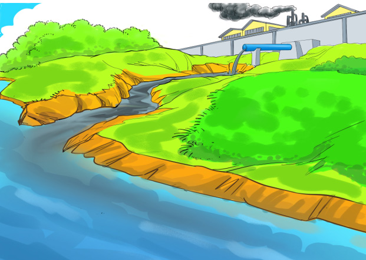

kutoka viwandani yakitiririshwa kwenye ardhi, mito na maziwa huathiri viumbehai wa nchi kavu na majini. Aidha, taka ngumu kutoka viwandani kama vile: mifuko au chupa za plastiki zikitupwa ovyo huharibu mazingira. Kielelezo namba 9 kinaonesha namna viwanda vinavyochafua mazingira.
Majitaka yasiyotibiwa
Moshi kutoka kiwandani
Mto

Majitaka yasiyotibiwa
Moshi kutoka kiwandani
Mto
Njia za kukabiliana na athari zitokanazo na shughuli za viwanda
Uharibifu wa mazingira unaotokana na shughuli za viwandani unaweza kudhibitiwa kwa kujenga viwanda mbali na makazi ya watu. Kuweka utaratibu wa kusafisha au kutibu majitaka yanayotoka viwandani ili yaweze kutumika kwa shughuli